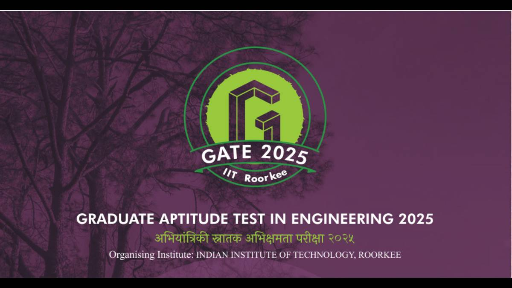
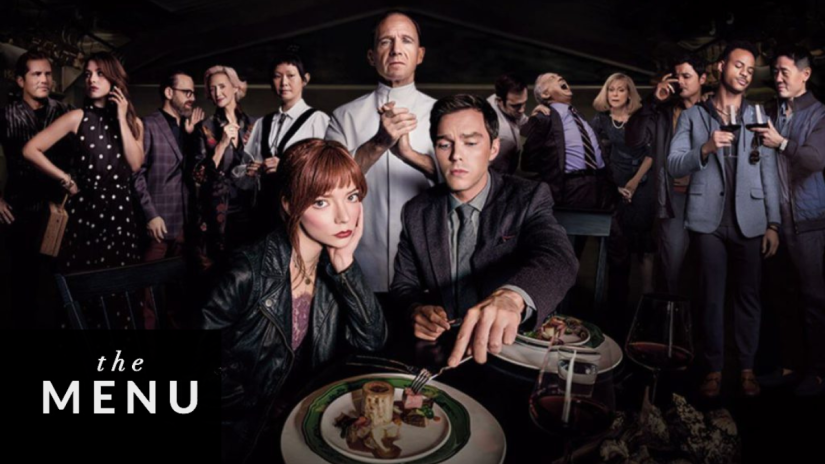

M.Tech in CSE Graduated
IIIT Hyderabad
Open to Opportunities
Machine learning engineer and IIIT Hyderabad M.Tech graduate. I build language-model and computer-vision systems, and write about what I learn.
About me
I'm a machine learning engineer who likes taking an idea all the way from a blank notebook to something people can use. My work spans language models, retrieval and computer vision, backed by solid software and DevOps foundations.
I graduated with an M.Tech in Computer Science from IIIT Hyderabad in July 2026, have two IEEE conference papers, and write about AI and engineering on Medium.
Journey
IIIT Hyderabad
PCCOE, Pune
Grade: 8.52
Bankat Swami Mahavidyalaya
89.08%
Zenerative Minds
Building applied machine-learning systems.
PTC
Maintained and debugged cron applications, and worked on CI/CD integration and automation with Jenkins and Maven. Strong grounding in Jenkins, Docker and the JUnit testing framework, with a focus on streamlined, scalable infrastructure.
Persistent Systems
A learning internship across core CS: DBMS, operating systems, computer networks, computer architecture, data structures and algorithms, OOP, compiler design and theory of computation.
The Sparks Foundation
Built a Razorpay payment gateway for a charitable trust NGO using HTML, CSS, JavaScript and the Razorpay API.
Skills
Scroll to open each orbit ↓
AI / ML & Computer Vision
Language models, retrieval and computer vision: trained, evaluated and shipped as working systems.
Pretraining, fine-tuning, RAG and LLM applications.
Detection, segmentation, depth, 3D point clouds and image processing.
Unsupervised matching, document AI and natural-language-to-SQL.
Trained a SentencePiece tokeniser with effective token coverage across English, Marathi and Konkani. Built a dense Gemma-style autoregressive model (106M parameters) and pretrained it on 3B+ tokens, then fine-tuned it for sentence formation and English-to-Konkani translation.
A tutoring system that combines hierarchical retrieval with agentic workflows: three-level chunking, hybrid vector and keyword search, BGE reranking and Gemini for answers, plus quiz generation, PDF/DOCX/PPT export and email delivery behind JWT role-based access.
*As reported in the project README.
View on GitHubExtended Faster R-CNN to predict oriented bounding boxes using angle regression with multi-bin classification, and built a multi-task U-Net that does semantic segmentation and depth estimation together. Implemented PointNet for 3D point-cloud classification, with critical-point extraction and permutation-invariance checks.
Why GraphRAG exists, how indexing, retrieval and generation work, what the research says about multi-hop tasks, and a practical checklist for choosing vector, graph or hybrid.
Vector RAG finds relevant information, GraphRAG finds the connections between that information.Read the article →
Research
Two IEEE conference papers in computer vision.
Projects
Blog
Turning a small team's Node.js and PostgreSQL app into real infrastructure on one office PC, with PostgreSQL WAL, Caddy and restic, plus an honest list of limitations.
GraphRAG explained: knowledge graphs, community summaries, and when graphs beat (or don't beat) plain vector search.
Re-implementing vector, list, map and more, and comparing them with the standard library.
Read more →

Off the clock
A hand-picked, animated collection of psychological thrillers, feel-good rom-coms, gripping police dramas, all-time classics and songs you can play right on the page. Every title comes with a poster, a quick summary and the best place to watch it.
Got a gem I'm missing? Suggest it there and I'll review it.
Contact
Open to ML engineering roles, collaborations and good conversations about AI, cinema or music.
✉Email me